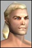

Last Thread Next Thread Last Thread Next Thread  |
| Author | Thread |
| Outlaw Leet Registered: Jan 2002 | First let me state that, for the most part, I really enjoy this game. BUT.......... this bug that causes you to not be able to use any of your items such as first aid kits and med kits until you zone out of the mission area is ridiculous. It needs to be fixed. It is so bogus when you either die because of it or after having completed most of the mission and have most of the mission area map mapped that you have to zone out and then back in to have to the map be gone. YOU PEOPLE NEED TO FIX THIS! Or at least provide your guides with the ability to give back the lost experience due to an unfair death. I think you should also make it so that you dont lose your mission zone map when you zone out at least not till you log out. But mainly Im mad about lost experience. You spend 2 hours getting through most of a mission only to die due to a "GAME GLITCH" and then when you seek out help from a guide, you are told "Sorry we understand your frustration but there is nothing we can do. Im sorry but that is not acceptable and NEEDS TO BE FIXED. I have talked with several people about this ingame and they feel the same way. If it is not addressed soon I will be leaving this game and going back to Everquest. At least there when you die due to a game glitch they return your experience to you 95% of the time. They also fix the problems rather expediently there. I hope I dont have to leave though cuz I am really sick of EQ. I would like an actual reply to this from someone at Funcom, not just flames from butkissing bootlickers, who probably play Clan characters anyway lol. Well theres my 2 cents worth. I hope you folks get your act together cuz for the most part I like your game. |
 January 26th, 2002 16:08 January 26th, 2002 16:08 | #1 |
| FireC Supa Leet Registered: Dec 2001 | I've got this a few times as well, bad thing was that at the same time the healing nanos stopped working as well. Only thing that I could still use was nano packs and first aid kits... have you ever tried to heal yourself back to full health with first aid kits? For me it started happening just yesterday, never before that. |
| January 27th, 2002 05:40 | #2 |
| Scorus Supa Leet Registered: Nov 2001 | There are a few work-arounds for this. Apparently there are a couple of different bugs because different things work and don't work for different people. Zoning always corrects the problem, if you didn't know that. Often the problem is that you are stuck in mid attack. Look and see if your attack bar is stuck at partial or full. If so then hit Q and it should free everything up. Another bug that causes this can be fixed by equipping or deequipping something. Not sure why, but several people have told me it worked for them. So, try those and good luck. Lord only knows when they will fix one or all of them... Scorus |
| January 27th, 2002 07:28 | #3 |
| FireC Supa Leet Registered: Dec 2001 | Once you're in a lvl40+ mission last thing you want to do is log out or zone out... losing the map makes it take twise as long to finish  . Also today I was in the middle of nowhere hunting and my med packs stopped working... luckily I though of trying to put the med packs into the bank near by and try using them after taking them out again as that did work. I wish things would get fixed so that no more new bugs wouldn't come to replace the old ones but that's just not going to happen. *sigh* . Also today I was in the middle of nowhere hunting and my med packs stopped working... luckily I though of trying to put the med packs into the bank near by and try using them after taking them out again as that did work. I wish things would get fixed so that no more new bugs wouldn't come to replace the old ones but that's just not going to happen. *sigh* |
| January 27th, 2002 20:42 | #4 |
| Grymvarg Leetas  Registered: Feb 2002 | Also, standing up and using the treatmentkit/nano rechargers on yourself helps getting rid of the bug. |
| February 5th, 2002 03:31 | #5 |
| xbmspec Phear Leet  Registered: Nov 2001 | I like this line : "I will be leaving this game and going back to Everquest. At least there when you die due to a game glitch they return your experience to you 95% of the time. They also fix the problems rather expediently there. I hope I dont have to leave though cuz I am really sick of EQ. " ... hehe |
| February 5th, 2002 14:33 | #6 |
| Meligant Supa Leet  Registered: Nov 2001 | I ran into this problem yesterday. It appears that I was attacked by 2 MOBs not just one. However, when I ran away across the dungeon so I could content with "them" near the mission exit, one got stuck and I got the "attacked by NONE" message. After the battle I had 400 HP and had a 81 pt poison nano running on me. I sat down...no treatment. Use first aid. Watch my health go down while I try to get my treatment to work at 100 HP I'm outside the mission using my treatment kit. For the love of GOD, if I get the attacked by NONE message hard code that dam thing to let me use treatment! |
| February 5th, 2002 15:05 | #7 |
| Koradril Eleet Registered: Jan 2002 | I had the same problem today. I was in a mission, about halfway done. It had taken me forever to get to where I was, due to the fact that I couldn't heal myself. I had to wait for my health to go up on its own because I couldn't use medkits. Also, I couldn't use any of my special attacks "Wait for previous attack to finish", even if I hadn't used it, or it said "... skill available". Anyway, I started a fight with a green handyman II. Easy kill. Im at about half health. It had hit me for 113 pts of damage, and I have 200 something hp. It hits me for another 10 points, AND I DIE, losing 3000xp (about half a level for me). Not only was the game almost unplayable before that, but dying at half health because of a game glitch, after I had spent probably about an hour and 1/2 accruing that xp was infuriating. Now, I really like this game. But, thats the kind of crap that will make me stop playing. Im paying for a service I enjoy. Im not paying to be robbed and frustrated, and if that continues to be the case, Ill stop paying. Last edited by Marauth on February 5th, 2002 at 18:57 |
| February 5th, 2002 18:42 | #8 |
| genoz Leet  Registered: Jan 2002 | This sort of thing is exactly why I won't promote the game. I got that email a couple of weeks ago trying to recruit me as an affiliate. I wrote them a long letter explaining six or seven big problems off the top of my head. Unfortunately, I didn't get a response from anyone who would analyze things point-by-point, I got email from the smoothing-over guy. I'm taking a break to cool down. I'll be on to conduct clan business, but I want a break from losing hours and hours of xp accumulation due to this *** LONG-KNOWN *** two mobs / kit bug. Geno |
| February 5th, 2002 18:51 | #9 |
| Acidrob Eleet Registered: Feb 2002 | I have a feeling this bug is something to do with the game getting confused with wether ur sitting or standing. I had the same problem once in Mort, I couldnt heal or use rechargers - the people on my team said I was moving around while sitting down - I was running normally on to my view. After standing and sitting down again a couple of times things started working again |
| February 11th, 2002 10:15 | #10 |
| Karet Leet Registered: Dec 2001 | Ah yes... Hmm... yes the old can't heal myself wtf is going on bug. Well, here's the fix. While still seated, deselect yourself. Stand. Reselect yourself using F1. Sit again and press enter and the space bar three times in rapid succession. Press escape. Stand again and deselect yourself Open and close your inventory twice quickly using the keyboard shortcut. Press enter and type /scratch. BEFORE the scratch animation is finished type /chicken and /legshake as fast as possible. Sit. While holding the Alt key, press F4 twice very quickly. Stand up from your chair. Go to the fridge. Grab a cool beverage. Sip said beverage. Sit back down at chair. If clientr isn't hosed, relaunch application. Stand. Sit. Select yourself by pressing F1. Heal. Ahh.... all better. (seriously though... playing with the agg/def slider has helped me in a few instances...) |
| February 11th, 2002 22:33 | #11 |
| Meligant Supa Leet Registered: Nov 2001 | Re: Ah yes... quote:I'd almost rather /terminate  |
| February 11th, 2002 22:52 | #12 |
| The saved copy (Funcom's forum archive, saved by the Wayback Machine in 2025) |
All times are GMT.